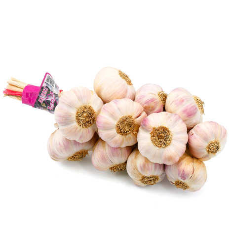

Ail rose
de Lautrec


⟹ Terroir & Savoir-faire paysan ⟸
La légende veut qu'au Moyen Âge, un marchand ambulant de passage à Lautrec, faute d'argent pour régler son repas, ait payé l'aubergiste avec quelques gousses d'ail rose. Séduit par ces jolis bulbes, l'aubergiste les aurait plantées dans son jardin, donnant naissance à une culture qui allait peu à peu se répandre dans tout le Lautrécois.

En 1959, les producteurs du secteur se fédèrent pour structurer et promouvoir leur filière. Sept ans plus tard, en 1966, l'ail rose de Lautrec devient l'un des tout premiers produits agricoles français à obtenir le Label Rouge. Il faudra attendre trente années supplémentaires, en 1996, pour que l'Indication Géographique Protégée vienne consacrer à son tour ce condiment d'exception.
La zone de production s'étend aujourd'hui sur environ 360 hectares répartis sur 88 communes du sud-ouest du Tarn. Chaque été, depuis 1971, la fête de l'Ail rose de Lautrec réunit producteurs et visiteurs le premier vendredi du mois d'août, perpétuant une tradition paysanne fière de son terroir.
Derrière chaque tresse, appelée localement « manouille », se cache un geste minutieux transmis de génération en génération : tri des caïeux, séchage naturel en gerbe puis tressage entièrement réalisé à la main, sans aucune machine.
Tresse traditionnelle de 500 g : la présentation historique, calibrée selon le cahier des charges du Label Rouge.
Ail rose en vrac : têtes vendues à l'unité ou au kilo, pour la cuisine du quotidien.
Ail rose semoule ou en poudre : une transformation plus récente, pratique pour l'assaisonnement rapide.
Marché de l'Ail Rose de Lautrec, chaque vendredi matin de juillet à décembre, sur la place du village.
Fête de l'Ail Rose de Lautrec, chaque premier vendredi d'août, depuis 1971, au cœur du village.
Producteurs et exploitations du Lautrécois qui proposent la vente directe de tresses fraîchement confectionnées.